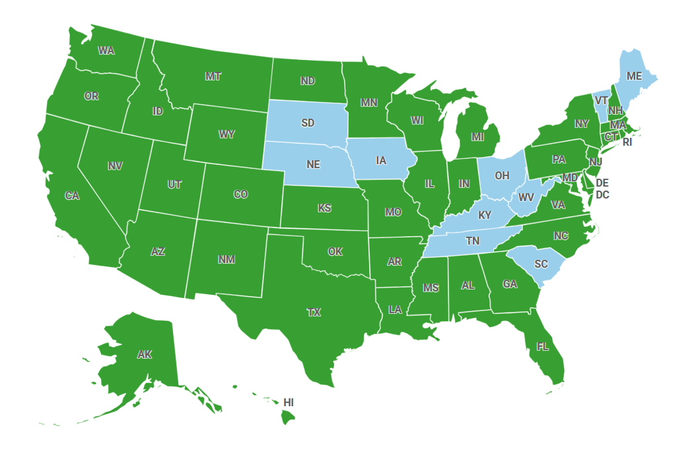
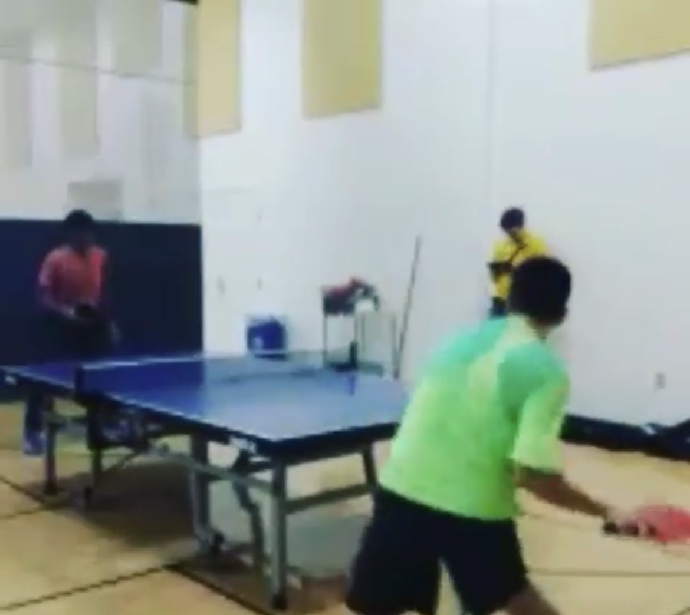
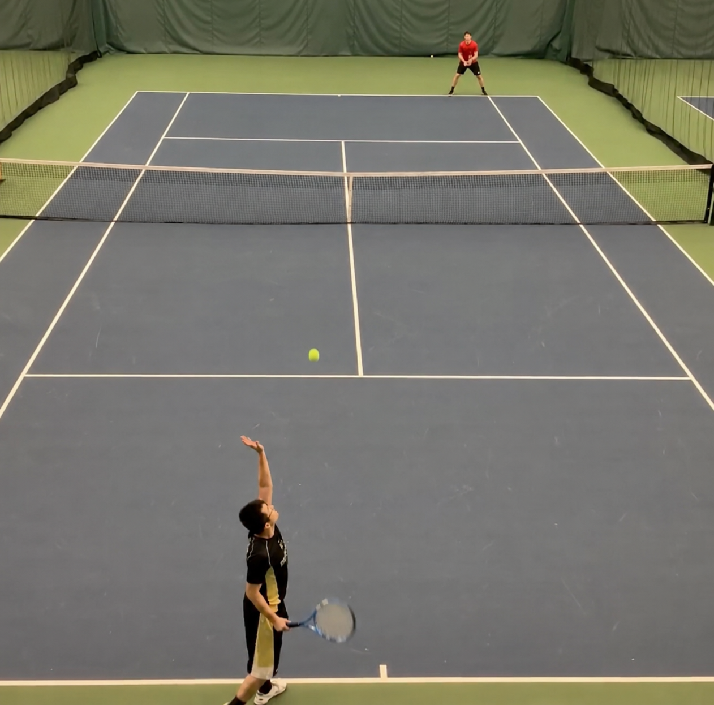
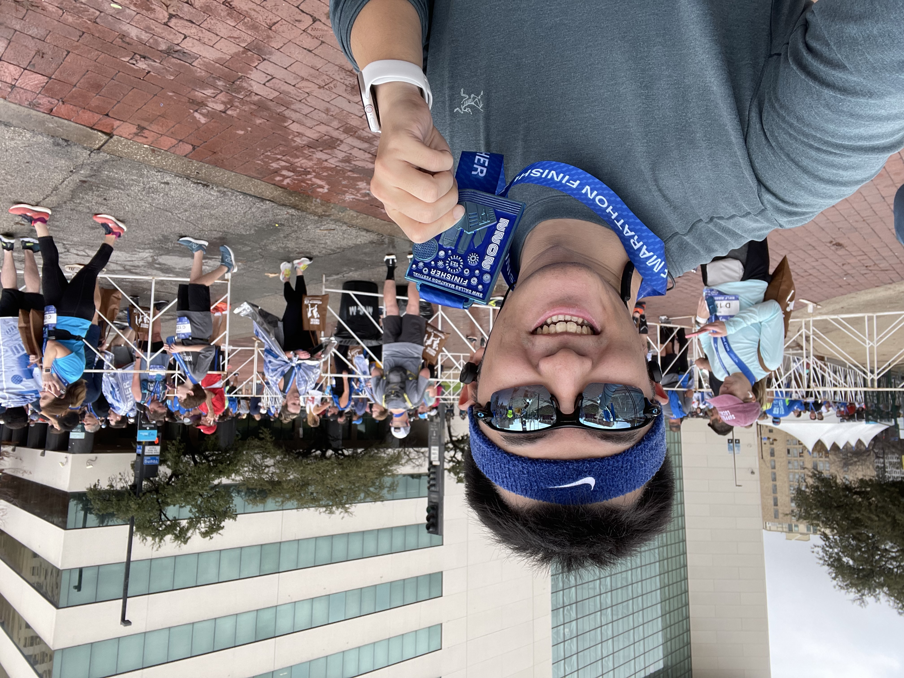
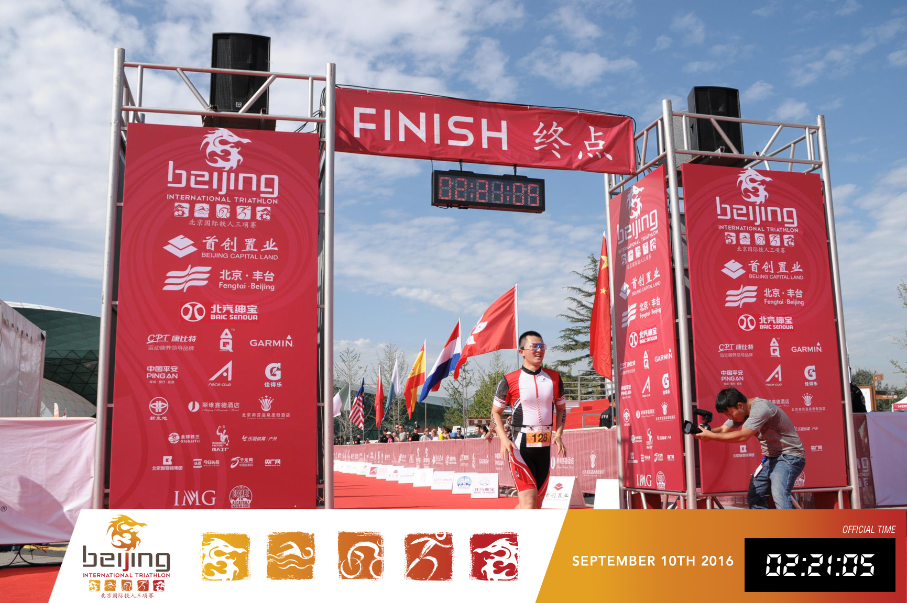
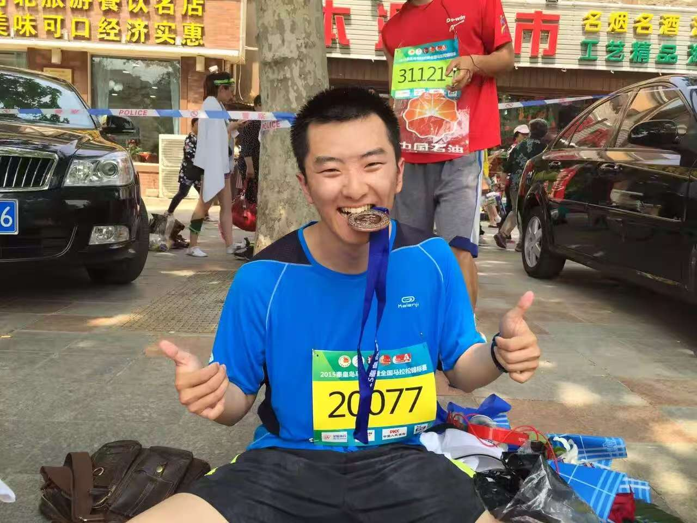

About Me
Travel
I enjoy traveling and driving. So far, I have visited 40 U.S. states. Each journey has given me opportunities to experience different cities and cultures, meeting new people, and creating unforgettable memories.

A map of the United States with footprints marking the states I have visited.


Some memories from intramural sports and tennis tournaments.
Playing
I enjoy different racket sports, especially table tennis, badminton, and tennis. I started playing table tennis at a young age. During college, I was a member of both the university table tennis team and badminton team. They require quick reactions, but also patience and concentration.
Endurance
I also enjoy running and swimming. Over the years, I have completed several running and triathlon events. They gave me a different kind of feeling when I build endurance, consistency, and the ability to continue moving forward.
2015
Qinhuangdao International Marathon
2016
Beijing International Triathlon
2022
Dallas Marathon



Some memories from running and triathlon events.
Scan the QR code to explore my travel notes.
Writing
I also enjoy writing. During my travels, I document my journeys on my personal WeChat Official Account, 行囊中的梦 (Dreams in My Backpack). It is part travel diary and part photo wall, the people I have met, and the moments I want to remember.
If you are interested, you can scan the QR code to follow the account and browse my travel notes.